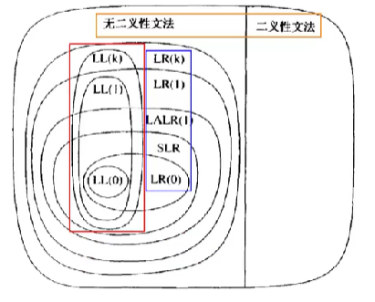
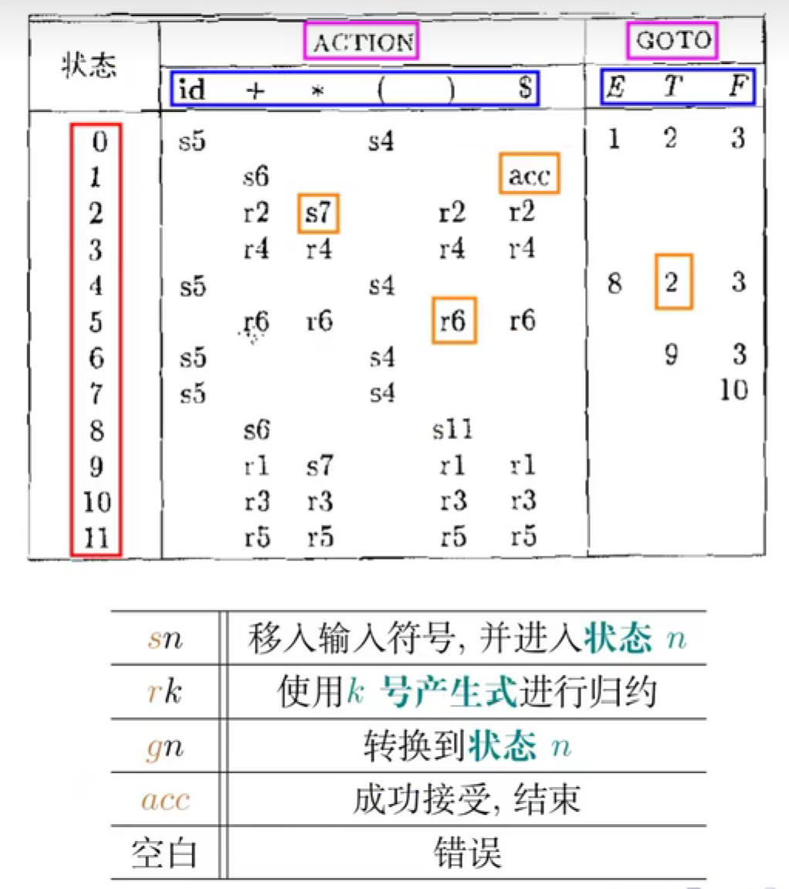

 定理 存在一种LR语法分析方法，保证句柄总是出现在栈顶
定理给出了存在性证明，句柄并不一定出现在栈顶，但这可能会给我们的算法带来很多负担，因此我们使用栈顶的这种。
 shift移进 reduce规约/回溯 goto
状态刻画了当前 所有观察到的针对所有产生式的右部的前缀。 状态是项集。
点指示了栈顶，左边是栈中内容（路径），右边是期望看到的文法符号串。
CLOSURE({[E'→.E]})
接收状态
GOTO函数被拆分成ACTION表（终结符）和GOTO表（非终结符）
LR(0)分析表构造
LR0分析，自动机是本质，栈是实现 LR0的0指的是规约时不需要向前看，无脑规约 SLR(1) simple
LR(1) SLR相较于LR(1)可能算是比较静态的 LR(1)项中新增一个记录当前句柄之后的符号的
只有下一个输入符号为a时，才可以规约
期望剩余输入的开头可以由βa推导出（要写a是因为β可能可以推出ε） （只有）闭包规则的修改如下：
初始状态为
LR(1)缺点是产生的状态数太多了（相当于将每个LR0项又细分开） LALR(1)将具有相同LR(0)项的状态合并（合并方法：先从没有出边的开始） 得到状态数和SLR(1)相当的自动机，能力介于SLR(1)和LR(1)之间 可以证明LALR(1)的改造不会引进规约/移入冲突 存在方法可以直接构造LALR(1)而不是从LR(1)改造